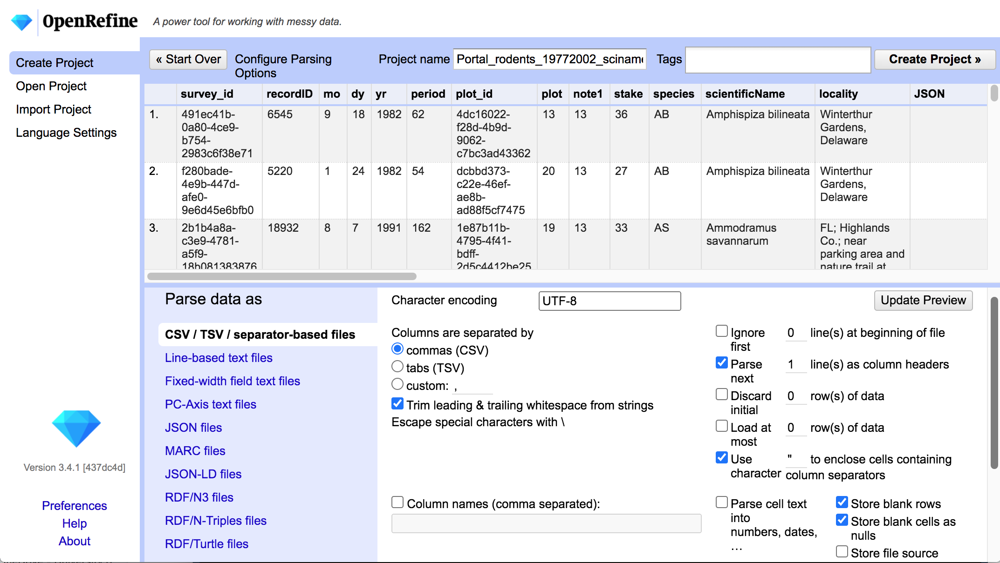
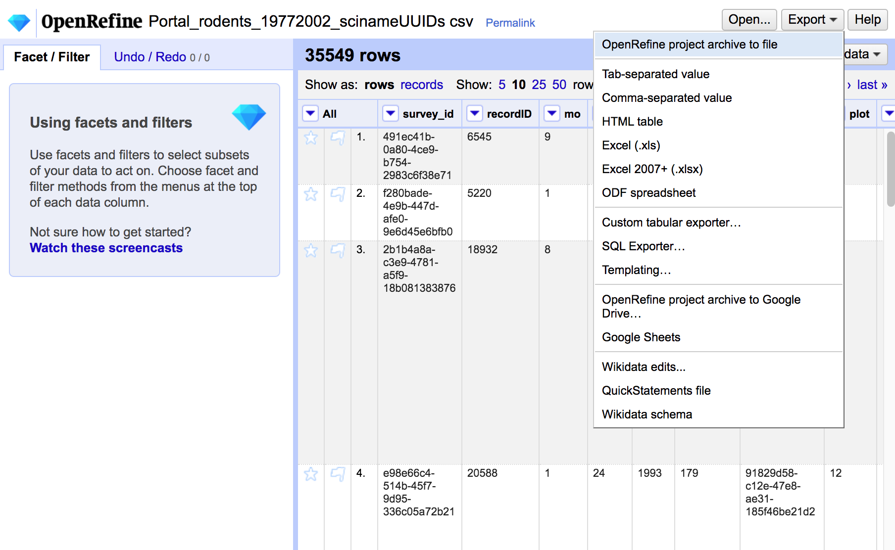
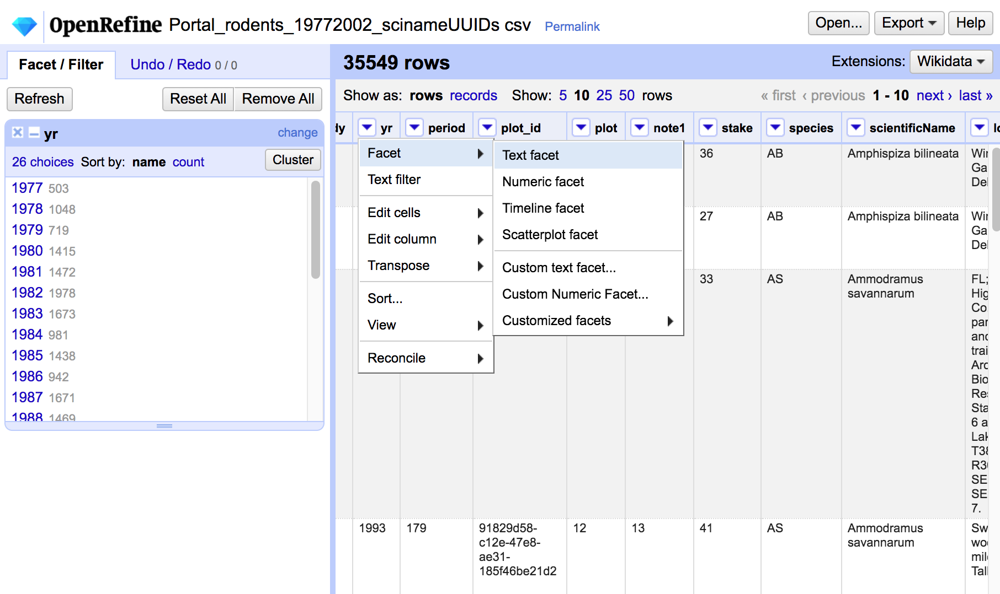
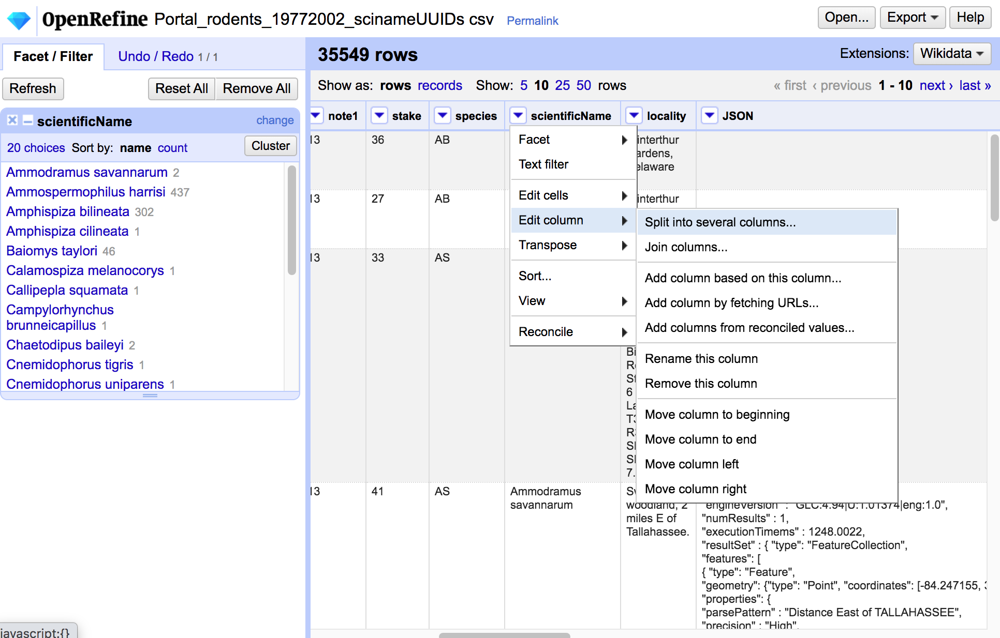

Natya Hans Academic Research Consulting & Services, University of Florida (updated: 2024-02-28)
Intro
- What is OpenRefine? OpenRefine is a free open-source tool to clean data in a scalable and reproducible way. Finding/fixing errors works for small data, but:
- spotting inconsistencies is harder in larger datasets
- applying corrections identically to larger datasets is tedious!
- how do you remember and apply the same corrections to new data?
- OpenRefine is NOT for:
- very large datasets (> 1 million rows)
- complicated calculations (e.g. performing numerical simulations)
- non-tabular data
- BUT there are some features to help with basic un”tidy”ness
- Learning Outcomes By the end of the workshop, participants will be able to:
- load and examine data in OpenRefine
- save and re-open OpenRefine projects
- use clustering and transforms to identify and correct data errors
- export data cleaning steps as scripts
Introduction to OpenRefine
- Basic Workflow
- Workflow
- import from a data file or load an existing project
- do your data cleaning
OpenRefine does not modify your data files!
- Get work out by (one or more of):
- saving project
- exporting data
- exporting script for data cleaning
- Importing Data
- OpenRefine can import most tabular data formats:
- tab-separated values, comma-separated values, custom separators
- excel spreadsheets (
.xls, .xlsx)
- many others
- Import Preview 
- Import Settings
- Check the preview to see if the data file is being parsed correctly!
- adjust delimiters
- number of lines to skip in the header
- column names?
- other settings
- Saving and Loading Projects
- OpenRefine has its own file format for saving and loading projects
- This lets you perform data cleaning across multiple sessions, saving progress
- no need to re-import data
- Projects Preview 
- DEMO
- Explore Data Distributions
- Use facets to examine how values are distributed in your data
- facets apply to one OR multiple columns
- different types of data require different facets
- visualization may reveal issues to be fixed (typos, outliers, etc.)
- Facet Preview 
- DEMO
Basic Error Correction
- Categorical Variables
- data values may have typos and/or errors
- How do you detect and fix these errors?
- edit the labels directly in Facet mode
- use ‘Cluster’ options to find groups of similar labels
(maybe these should be the same label?)
- DEMO
- Clustering Methods .small[* key collision
-
fingerprint - checks for basic string manipulation differences (spaces, accents, word order)
-
n-gram fingerprint - checks for clusters with the same set of n-grams (n-letter sequences)
- remaining choices are phonetic (and for different languages)
- nearest neighbor
-
levenshtein - maximum distance between labels with sequences of at least Block Chars are identical
-
ppm - based on kolmogorov complexity of the strings]
- Column Transformations
- re-order / re-name columns
- merge or split columns 
- Value Transformations
- built-in transforms:
- convert types (e.g. text to date)
- basic edits (convert case, remove spaces)
- fill in empty cells with values from above
- custom transforms:
- DEMO
Saving Data Cleaning Steps
- Reproducibility
- OpenRefine records all data transformations
-
Undo/Redo allows you to select different stages of processing to revert to
-
Extract allows you to export the transformation steps in JSON format
-
Apply allows you to perform a set of transformations from JSON format
- DEMO
- Summary OpenRefine has a lot of functionality!
- simple interface for data cleaning
- syntax for doing data transformations
- reproducible processing workflows
- lots of online examples and extensions ## Thanks
- Let me know what content you’d like to see
- Contact me for additional questions or consultation requests!
- Check back in on the libguide for more modules and contact info:
- Orignal slides courtesy of Hao Ye